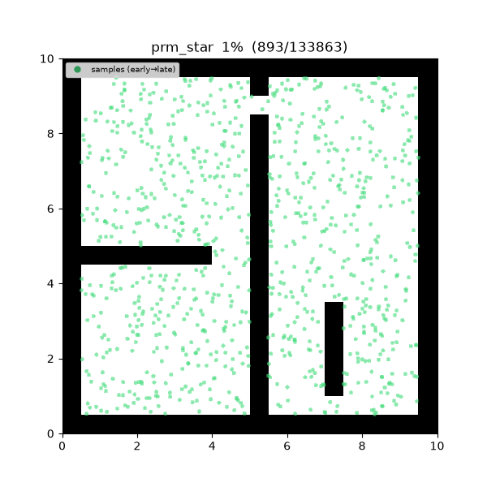
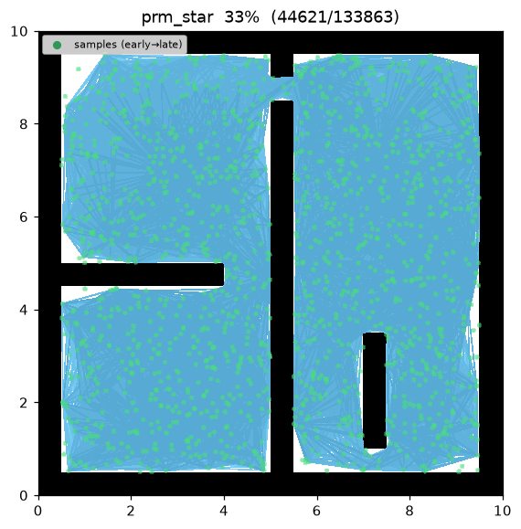
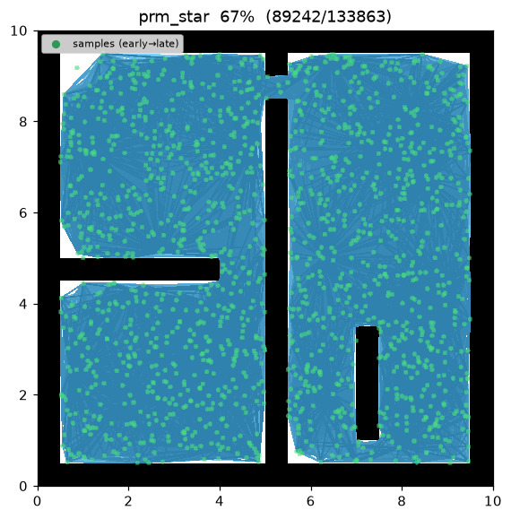
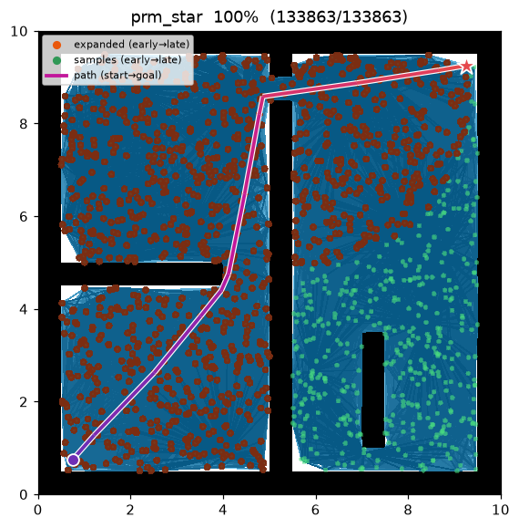
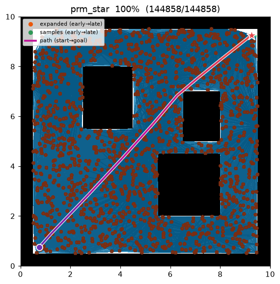

PRM* (PRM-star)¶
| 항목 | 내용 |
|---|---|
| 분류 | sampling-based, roadmap, asymptotically optimal |
| 요구 capability | SamplingSpace |
| 완전성 | probabilistically complete |
| 최적성 | asymptotically optimal — 표본 수 → ∞ 에서 최적 경로에 확률 1 로 수렴 |
| 복잡도 | 기대 이웃 수 Θ(log n) → 간선 수 near-linear, 반경 그래프 구성이 지배 |
| 원 논문 | Karaman & Frazzoli (2011) 2 |
배경¶
PRM 은 고정 반경을 써서 극한에서도 최적으로 수렴하지 않는다. Karaman & Frazzoli2 는 로드맵의 연결 반경을 표본 수에 따라 줄이는 하나의 정책만 바꾸면 PRM 이 점근 최적이 됨을 보였다 — 이것이 PRM* 다. 알고리즘 골격(표본화 → 반경 연결 → Dijkstra 질의)은 PRM 과 완전히 같고, 차이는 반경 하나뿐이다.
핵심 아이디어: 반경을
로 두면 각 노드의 기대 이웃 수가 \(\Theta(\log n)\) 로 유지된다. 이 밀도가 극한에서 최적 경로를 복원하기에 딱 충분하면서도 간선 수를 near-linear 로 억제한다. 고정 반경은 (너무 크면) \(O(n^2)\) 간선을 만들거나 (너무 작으면) 연결성이 끊겨 최적성을 잃는다.
동작 원리¶
maze01 — 표본이 흩뿌려지고, 줄어든 반경으로 각 노드가 기대상 로그 개의 이웃과 이어져 로드맵이
형성된 뒤 Dijkstra 가 최단 경로를 뽑는다.

탐색 중간 과정 (좌 → 우: 표본/간선 초반 / 로드맵 형성 / 최종 경로):
 |
 |
 |
open01 최종 결과 — 거의 직선에 가깝다:

PRM_STAR(start, goal):
R ← roadmap()
R.add(start); R.add(goal)
for i in 1..num_samples: # 학습: 자유 노드 표본화
q ← sample()
if is_state_valid(q): R.add(q)
r ← gamma · sqrt(log n / n) # 표본 수에 따라 줄어드는 반경 (d = 2)
for v in R.nodes: # 학습: r 이내 연결
for u in R.nodes within r of v (u before v):
if is_motion_valid(u, v):
R.add_edge(u, v, distance(u, v))
return DIJKSTRA(R, start, goal) # 질의
반경은 최종 노드 수 \(n\) 이 정해진 뒤 한 번 계산해 모든 노드에 같은 값을 쓴다. 이것이 PRM 과의 유일한 코드 차이다.
측정치 (Python, seed = 1, trace on):
| map | path cost | roadmap 노드 | expanded (Dijkstra pop) |
|---|---|---|---|
| maze01 | 13.595 | 1,502 | 1,092 |
| open01 | 12.053 | — | — |
C++ 구현도 동일 시나리오를 미러링하며, 언어 간 난수 스트림 차이 범위 안에서 같은 결과를 낸다.
재현:
python python/demos/demo_prm_star.py \
--map maps/grid/maze01.yaml --scenario maps/scenarios/maze01_s1.yaml \
--params configs/global_planning/prm_star.yaml --trace out/prm_star.jsonl
python tools/viz/replay.py out/prm_star.jsonl --gif out/prm_star.gif
성질¶
- 완전성: probabilistically complete2.
- 최적성: asymptotically optimal. 줄어드는 반경이 기대 이웃 수를 \(\Theta(\log n)\) 로 유지해 극한에서 최적 비용 \(c^*\) 로 확률 1 수렴한다2.
- 비용: 기대 이웃 수가 로그로 억제되므로 간선 수가 PRM 의 고정 반경 대비 near-linear 다. 같은 표본 수에서 PRM 과 유사한 해를 내되, 최적성 보장이 붙는다.
점근적 최적성 근거¶
연결 반경. \(n\) 개 표본에 대해
(\(d\): 공간 차원, 여기서 \(d=2\); \(\mu(X_{\text{free}})\): 자유 공간 부피; \(\zeta_d\): 단위 \(d\)-볼 부피).
정리 (점근적 최적성, Karaman & Frazzoli 2011). 위 반경 하에서 로드맵의 최단 경로 비용 \(Y_n\) 은
직관. 반경을 \((\log n/n)^{1/d}\) 로 줄이되 계수 \(\gamma\) 를 임계값 위로 두면 각 노드가 기대상 \(\Theta(\log n)\) 개 이웃을 가진다 — 최적 경로와 같은 homotopy 류의 경로를 극한에서 복원하기에 충분한 연결성이다. 반경이 이보다 빨리 줄면 그래프가 끊겨 최적성이 깨지고, 상수로 두면 간선이 \(O(n^2)\) 로 폭증한다. \(r_n\) 은 이 둘 사이의 최소 밀도다.
간선 수 도출. 표본 밀도 \(n/\mu(X_{\text{free}})\) 에서 반경 \(r\) 공 안의 기대 이웃 수는 \(\approx\zeta_d\,r^d\,n/\mu(X_{\text{free}})\). \(r=r_n=\gamma(\log n/n)^{1/d}\) 를 대입하면
상수 반경이면 \(\mathbb{E}[\deg]=\Theta(n)\)·\(|E|=\Theta(n^2)\) 로 폭증하고(그게 PRM), 반대로 이웃 수를 \(k=O(1)\) 로 고정하면 random geometric graph 연결 임계 \(\Theta(\log n)\) 미만이라 그래프가 조각나 최적성이 깨진다. \(r_n\) 은 연결성을 지키는 최소 밀도를 정확히 집는다.
파라미터¶
| 이름 | 타입 | 기본값 | 범위 | 설명 |
|---|---|---|---|---|
num_samples |
int | 1500 | [1, 200000] | 로드맵에 배치할 충돌 없는 샘플 수 (start/goal 제외) |
gamma |
float | 30.0 | [0.01, 1000.0] | 연결 반경 계수 γ. r_n = γ·(log n / n)^(1/2) |
seed |
int | 1 | [0, 2^31−1] | 난수 시드 (재현성) |
방출 trace 이벤트¶
planning_started → sample_drawn* → edge_added* → node_expanded* → path_found → planning_finished
이벤트 목록은 PRM 과 동일하다 — 차이는 edge_added 를 부르는 반경 정책뿐이다.
References¶
-
Kavraki, L. E., Švestka, P., Latombe, J.-C., & Overmars, M. H. (1996). "Probabilistic roadmaps for path planning in high-dimensional configuration spaces." IEEE Transactions on Robotics and Automation, 12(4), 566–580. doi:10.1109/70.508439 ↩
-
Karaman, S., & Frazzoli, E. (2011). "Sampling-based algorithms for optimal motion planning." The International Journal of Robotics Research, 30(7), 846–894. doi:10.1177/0278364911406761 · PDF (arXiv) ↩↩↩↩